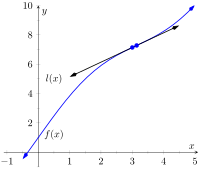
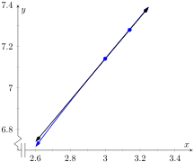

The derivative is a powerful tool but is admittedly awkward given its reliance on limits. Fortunately, one thing mathematicians are good at is abstraction. For instance, instead of continually finding derivatives at a point, we abstracted and found the derivative function.
Let's practice abstraction on linear functions, \(y=mx+b\text{.}\) What is \(y'\text{?}\) Without limits, recognize that linear functions are characterized by being functions with a constant rate of change (the slope). The derivative, \(y'\text{,}\) gives the instantaneous rate of change; with a linear function, this is constant, \(m\text{.}\) Thus \(y'=m\text{.}\)
Let's abstract once more. Let's find the derivative of the general quadratic function, \(f(x) = ax^2+bx+c\text{.}\) Using the definition of the derivative, we have:
So if \(y = 6x^2+11x-13\text{,}\) we can immediately compute \(y' = 12x+11\text{.}\)
In this section (and in some sections to follow) we will learn some of what mathematicians have already discovered about the derivatives of certain functions and how derivatives interact with arithmetic operations. We start with a theorem.
Theorem2.3.1.Derivatives of Common Functions.
Constant Rule
\(\lzoo{x}{c} = 0\text{,}\) where \(c\) is a constant.
Power Rule
\(\lzoo{x}{x^n}= nx^{n-1}\text{,}\) where \(n\) is an integer, \(n \gt 0\text{.}\)
Other common functions
\(\lzoo{x}{\sin(x)} = \cos(x)\)
\(\lzoo{x}{\cos(x)} = {-\sin(x)}\)
\(\lzoo{x}{e^x} = e^x\)
\(\lzoo{x}{\ln(x)} = \frac{1}{x}\text{,}\) for \(x \gt 0\text{.}\)
Figure2.3.2.Video explanation of Theorem 2.3.1 (2 videos)
This theorem starts by stating an intuitive fact: constant functions have zero rate of change as they are constant. Therefore their derivative is \(0\) (they change at the rate of \(0\)). The theorem then states some fairly amazing things. The Power Rule states that the derivatives of Power Functions (of the form \(y=x^n\)) are very straightforward: multiply by the power, then subtract \(1\) from the power. We see something incredible about the function \(y=e^x\text{:}\) it is its own derivative. We also see a new connection between the sine and cosine functions.
One special case of the Power Rule is when \(n=1\text{,}\) i.e., when \(f(x) = x\text{.}\) What is \(\fp(x)\text{?}\) According to the Power Rule,
In words, we are asking “At what rate does \(f\) change with respect to \(x\text{?}\)” Since \(f\)is\(x\text{,}\) we are asking “At what rate does \(x\) change with respect to \(x\text{?}\)” The answer is: \(1\text{.}\) They change at the same rate. We can also interpret the derivative as the slope of the tangent line to the function at a point \((c,f(c))\text{.}\) Since \(f(x)=x\) is a linear function with constant slope \(1\text{,}\) we can say that the derivative of \(f(x)=x\) is \(\fp(x)=1\text{.}\)
Theorem 2.3.1 states that the natural exponential function has a remarkable propery: it is equal to its own derivative! The video in Figure 2.3.3 explains why this is the case.
Figure2.3.3.Determining the derivative of \(f(x)=e^x\)
Let's practice using this theorem.
Example2.3.4.Using common derivative rules to find, and use, derivatives.
Let \(f(x)=x^3\text{.}\)
Find \(\fp(x)\text{.}\)
Find the equation of the line tangent to the graph of \(f\) at \(x=-1\text{.}\)
Use the tangent line to approximate \((-1.1)^3\text{.}\)
Sketch \(f\text{,}\)\(\fp\) and the tangent line from Item 2 on the same axis.
The Power Rule states that if \(f(x) = x^3\text{,}\) then \(\fp(x) = 3x^2\text{.}\)
To find the equation of the line tangent to the graph of \(f\) at \(x=-1\text{,}\) we need a point and the slope. The point is \((-1,f(-1)) = (-1, -1)\text{.}\) The slope is \(\fp(-1)= 3\text{.}\) Thus the tangent line has equation \(y = 3(x-(-1))+(-1) = 3x+2\text{.}\)
We can use the tangent line to approximate \((-1.1)^3\) since \(-1.1\) is close to \(-1\text{.}\) We have
Figure2.3.5.A graph of \(f(x) = x^3\text{,}\) along with its derivative \(\fp(x) = 3x^2\) and its tangent line at \(x=-1\)
Theorem 2.3.1 gives useful information, but we will need much more. For instance, using the theorem, we can easily find the derivative of \(y=x^3\text{,}\) but it does not tell how to compute the derivative of \(y=2x^3\text{,}\)\(y=x^3+\sin(x)\) nor \(y=x^3\sin(x)\text{.}\) The following theorem helps with the first two of these examples (the third is answered in the next section).
Theorem2.3.6.Properties of the Derivative.
Let \(f\) and \(g\) be differentiable on an open interval \(I\) and let \(c\) be a real number. Then:
While we will be mainly focused on using these rules, it can also be interesting to see where they come from. Fortunately, it is not too difficult to establish these rules using the definition of the derivative. The video in Figure 2.3.8 shows why the sum rule is true.
Figure2.3.8.Proving the sum rule
Theorem 2.3.6 allows us to find the derivatives of a wide variety of functions. It can be used in conjunction with the Power Rule to find the derivatives of any polynomial. Recall in Example 2.1.22 that we found, using the limit definition, the derivative of \(f(x) = 3x^2+5x-7\text{.}\) We can now find its derivative without expressly using limits:
We were a bit pedantic here, showing every step. Normally we would do all the arithmetic and steps in our head and readily find \(\lzoo{x}{3x^2+5x+7}= 6x+5\text{.}\)
Example2.3.9.Using the tangent line to approximate a function value.
Let \(f(x) = \sin(x) + 2x+1\text{.}\) Approximate \(f(3)\) using an appropriate tangent line.
This problem is intentionally ambiguous; we are to approximate using an appropriate tangent line. How good of an approximation are we seeking? What does “appropriate” mean?
In the “real world,” people solving problems deal with these issues all time. One must make a judgment using whatever seems reasonable. In this example, the actual answer is \(f(3) = \sin(3) + 7\text{,}\) where the real problem spot is \(\sin(3)\text{.}\) What is \(\sin(3)\text{?}\)
Since \(3\) is close to \(\pi\text{,}\) we can assume \(\sin(3) \approx \sin(\pi) = 0\text{.}\) Thus one guess is \(f(3) \approx 7\text{.}\) Can we do better? Let's use a tangent line as instructed and examine the results; it seems best to find the tangent line at \(x=\pi\text{.}\)
Using Theorem 2.3.1 we find \(\fp(x) = \cos(x) + 2\text{.}\) The slope of the tangent line is thus \(\fp(\pi) = \cos(\pi) + 2 =1\text{.}\) Also, \(f(\pi) = 2\pi+1 \approx 7.28\text{.}\) So the tangent line to the graph of \(f\) at \(x=\pi\) is \(y=1(x-\pi)+ 2\pi+1 =x+\pi+1 \approx x+4.14\text{.}\) Evaluated at \(x=3\text{,}\) our tangent line gives \(y=3+4.14 = 7.14\text{.}\) Using the tangent line, our final approximation is that \(f(3) \approx 7.14\text{.}\)
Using a calculator, we get an answer accurate to four places after the decimal: \(f(3) = 7.1411\text{.}\) Our initial guess was \(7\text{;}\) our tangent line approximation was more accurate, at \(7.14\text{.}\)
The point is not “Here's a cool way to do some math without a calculator.” Sure, that might be handy sometime, but your phone could probably give you the answer. Rather, the point is to say that tangent lines are a good way of approximating, and many scientists, engineers and mathematicians often face problems too hard to solve directly. So they approximate.
The graphs in Figure 2.3.10 shows the graph of the function \(f(x)\) along with the tangent line constructed at \(x=\pi\text{.}\) The graph in Figure 2.3.10 shows the same tangent line and function. Once zoomed in, you can barely distinguish the tangent line from the function. This indicates that the tangent line is a good a approximation of the function so long as we are near the point of tangency.
Figure2.3.10.A graph of \(f(x) = \sin(x)+2x+1\) along with its tangent line approximation at \(x=\pi\)
Figure2.3.11.A graph of \(f(x) = \sin(x)+2x+1\) along with its tangent line approximation at \(x=\pi\text{,}\) zoomed in
Subsection2.3.1Higher Order Derivatives
The derivative of a function \(f\) is itself a function, therefore we can take its derivative. The following definition gives a name to this concept and introduces its notation.
Definition2.3.12.Higher Order Derivatives.
Let \(y=f(x)\) be a differentiable function on \(I\text{.}\) The following are defined, provided the corresponding limits exist.
In general, when finding the fourth derivative and on, we resort to the \(f\,^{(4)}(x)\) notation, not \(\fp'''(x)\text{;}\) after a while, too many ticks is confusing.
Let's practice using this new concept.
Example2.3.14.Finding higher order derivatives.
Find the first four derivatives of the following functions:
Subsection2.3.2Interpreting Higher Order Derivatives
What do higher order derivatives mean? What is the practical interpretation?
Our first answer is a bit wordy, but is technically correct and beneficial to understand. That is,
The second derivative of a function \(f\) is the rate of change of the rate of change of \(f\text{.}\)
One way to grasp this concept is to let \(f\) describe a position function. Then, as stated in Key Idea 2.2.3, \(\fp\) describes the rate of position change: velocity. We now consider \(\fp'\text{,}\) which describes the rate of velocity change. Sports car enthusiasts talk of how fast a car can go from \(0\) to 60 mph; they are bragging about the acceleration of the car.
We started this chapter with amusement park riders free-falling with position function \(f(t) = -16t^2+150\text{.}\) It is easy to compute \(\fp(t)=-32t\) ft/s and \(\fp'(t) = -32\) (ft/s)/s. We may recognize this latter constant; it is the acceleration due to gravity. In keeping with the unit notation introduced in the previous section, we say the units are “feet per second per second.” This is usually shortened to “feet per second squared,” written as “ft/s\(^2\text{.}\)”
It can be difficult to consider the meaning of the third, and higher order, derivatives. The third derivative is “the rate of change of the rate of change of the rate of change of \(f\text{.}\)” That is essentially meaningless to the uninitiated. In the context of our position/velocity/acceleration example, the third derivative is the “rate of change of acceleration,” commonly referred to as “jerk.”
Make no mistake: higher order derivatives have great importance even if their practical interpretations are hard (or “impossible”) to understand. The mathematical topic of series makes extensive use of higher order derivatives.
Exercises2.3.3Exercises
Terms and Concepts
1.
What is the name of the rule which states that \(\lzoo{x}{x^n} = nx^{n-1}\text{,}\) where \(n \gt 0\) is an integer?
2.
What is \(\lzoo{x}{\ln(x)}\text{?}\)
3.
Give an example of a function \(f(x)\) where \(\fp(x) = f(x)\text{.}\)
4.
Give an example of a function \(f(x)\) where \(\fp(x) = 0\text{.}\)
5.
The derivative rules introduced in Section 2.3 explain how to compute the derivative of which of the following functions?
\(\displaystyle \sin(x) \cos(x)\)
\(\displaystyle e^{x^2}\)
\(\displaystyle \sqrt{x}\)
\(\displaystyle \frac{3}{x^2}\)
\(\displaystyle 3x^2-x+17\)
\(\displaystyle 5\ln(x)\)
6.
Explain in your own words how to find the third derivative of a function \(f(x)\text{.}\)
7.
Give an example of a function where \(\fp(x) \neq 0\) and \(\fpp(x) = 0\text{.}\)
8.
Explain in your own words what the second derivative “means”.
9.
If \(f(x)\) describes a position function, then \(\fp(x)\) describes what kind of function? What kind of function is \(\fpp(x)\text{?}\)
10.
Let \(f(x)\) be a function measured in pounds (lb), where \(x\) is measured in feet (ft). What are the units of \(\fpp(x)\text{?}\)